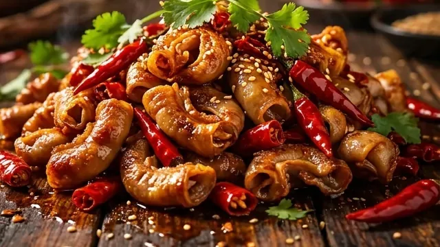
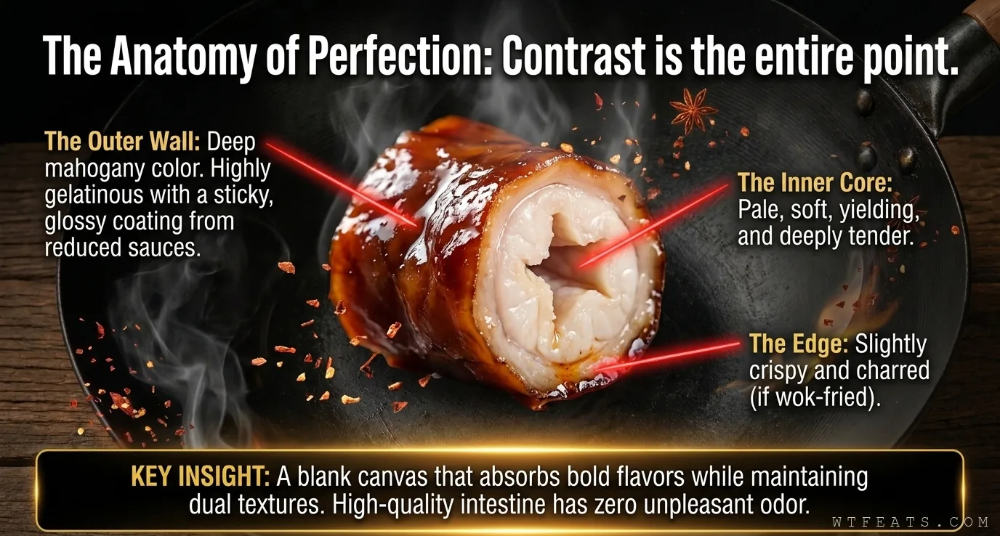
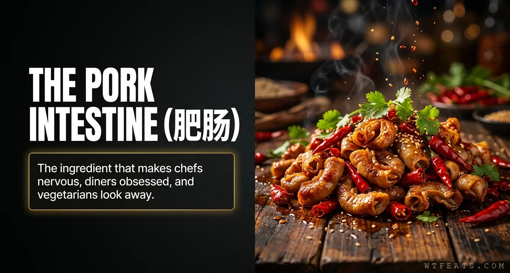

It always smells.
The internet's favorite objection. The scrubbing ritual disagrees — keep reading.
No. 008 / Misunderstood Chinese Food
Let's be honest about what this is: a pig's large intestine. Getting it from "large intestine" to "dinner" is one of the most technically demanding prep jobs in Chinese cooking. The Western food industry throws it away — pet food factories love it. Chinese cooks looked at it and said: challenge accepted.

The Western food industry throws it away. Chinese cooking looked at the same ingredient and saw one of its greatest textures.
Properly cleaned and blanched fèicháng is 脆Q — a satisfying resistance that gives way cleanly, never rubbery, never mushy.
This is a technical exam most home stoves can't pass. Every shortcut shows up on the plate. The intestine knows.
What Is It?
Fèicháng (肥肠) is pork large intestine — one to one and a half meters of it, folded over itself, arriving with the distinct biological evidence of its previous career. This is not a cut you throw in a pot and hope for the best. It is an ingredient that will humiliate you if you don't know what you're doing, and reward you beyond reason if you do.
Get the cleaning right and you have a blank canvas that absorbs flavor like nothing else in the kitchen — rich, savory, slightly sweet, with a texture that is simultaneously chewy, tender, springy, and gelatinous around the edges. From Sichuan's explosive 爆炒肥肠 to Beijing's 卤煮火烧, the same ingredient produces five completely different dishes. All of them correct.
The Anatomy
Cut a properly braised fèicháng on the diagonal and the argument makes itself: a deep mahogany, gelatinous outer wall — glossy, slightly sticky, loaded with reduced master stock — surrounding a pale, tender interior, edged with a crisp char if it came from the wok. Two completely different textures in one bite. The contrast is the point.

Myth vs Fact
The internet's favorite objection. The scrubbing ritual disagrees — keep reading.
Salt, flour, vinegar, repeat — cleaning ends in a neutral, pale, translucent wall you can hold to the light.
Humble origins, yes. But humble is not the same as easy.
150,000 BTU of wok heat and a six-step cleaning ritual — an exam most home stoves can't pass.

Visual Story
Follow the intestine from gut to glory: the six-step cleaning, the blanch that locks in the Q, the slow path versus the fast path, the BTU battle, and five regional factions that all claim the correct answer.
Enter the gauntletDeep Dive
The six-step cleaning ritual, the collagen transformation, master stock architecture, the Maillard sprint, and why restaurant fèicháng can't be faked.
Read the articleGuide
A tidy table of contents for the overview, the gauntlet, the craft, and what comes next.
Browse chaptersHow to Eat It
Steamed rice is not a side dish — it is equipment. It soaks up the reduced chili oil and master stock that cling to every section.
The Sichuan standard: cold beer against the numbing heat of Sichuan peppercorns and dried chilies. Sip, bite, repeat.
Pickled vegetables cut the richness; stir-fried greens reset the palate between bites of charred, gelatinous intestine.